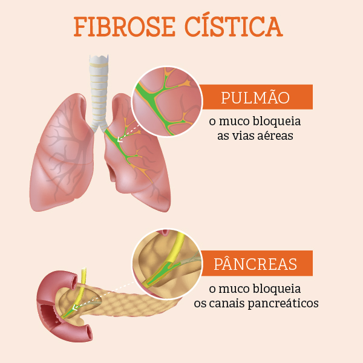
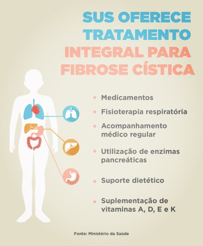

O que é Fibrose Cística?
È um Transtorno hereditário com risco de vida que danifica os pulmões e o sistema digestivo.
Entrando mais a fundo, a Fibrose Cística é uma doença genética rara, crônica e progressiva, caracterizada pela ocorrência de secreções espessas e viscosas que afeta diversos órgãos, principalmente: pulmões e o pâncreas.
Sintomas
-Tosse que não passa;
-Pneumonia e Bronquites recorrentes;
-Dificuldade no crescimento e no ganho de peso;
Tratamento
-Reposição de enzimas pancreáticas para auxiliar a digestão e a absorção de nutrientes;
-Reidratação;
-Reposição de sódio;
-Boa nutrição do paciente.
